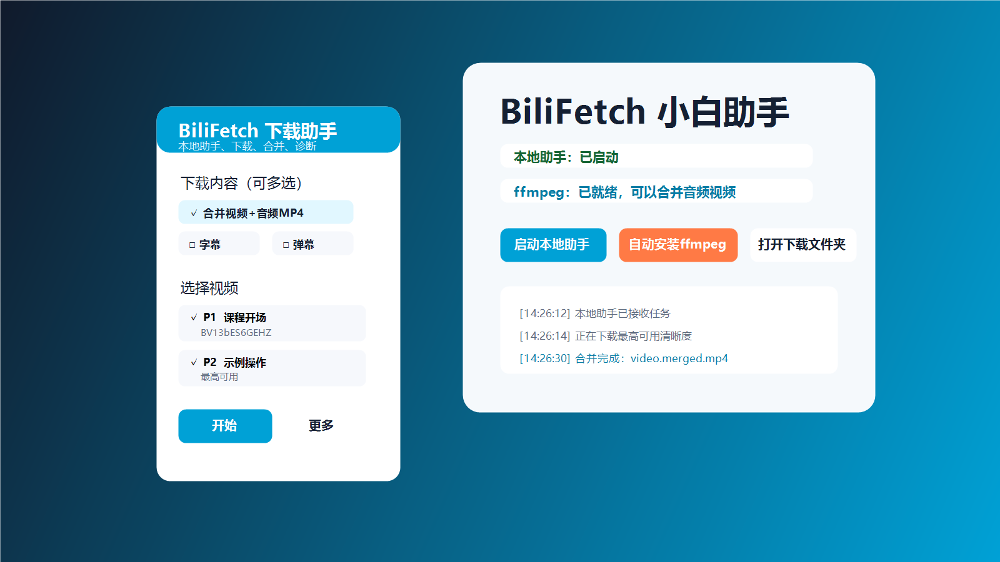

安装脚本猫
先在浏览器里安装脚本猫扩展，然后进入脚本猫管理页面。

Start
先在浏览器里安装脚本猫扩展，然后进入脚本猫管理页面。
点击本站的安装脚本入口，把脚本保存并启用。
进入 B 站普通视频页，右下角出现 BiliFetch 面板就说明脚本已运行。
Panel
默认会勾选当前视频。分 P 或合集页面可以点“全选”，也可以只保留自己要下载的几集。
默认是最高可用。只想要小一点的文件，可以选择 1080P、720P 或更低清晰度。
默认勾选“合并视频+音频MP4”。普通用户第一次使用，直接点“开始”即可。
还想保存字幕、弹幕、封面或信息 JSON 时，再勾选对应内容。
点“更多 > 检测助手”，可以确认本地助手是否启动、下载目录在哪里、ffmpeg 是否可用。
遇到错误时点“更多 > 复制诊断”，把复制内容和视频链接一起发给维护者排查。
Local Helper
Troubleshooting
确认脚本猫脚本已经启用，并且当前页面是 `https://www.bilibili.com/video/...` 或 `https://www.bilibili.com/list/...`。
先解压小白包，不要在 zip 里直接双击。再运行 `启动BiliFetch本地助手.bat`，保持窗口打开。
把 `ffmpeg.exe` 放到本地助手同一个文件夹，或安装 ffmpeg 并加入系统 PATH。
先确认当前账号能正常播放该视频。BiliFetch 不绕过登录、会员、版权或地区限制。
Boundary
BiliFetch 不绕过登录、会员、版权或地区限制，只处理当前页面正常返回的资源。
请只保存自己有权保存和使用的内容，不要把临时直链公开传播。
复制诊断用于排查脚本状态，不需要发送账号、密码、cookie 或会员信息。